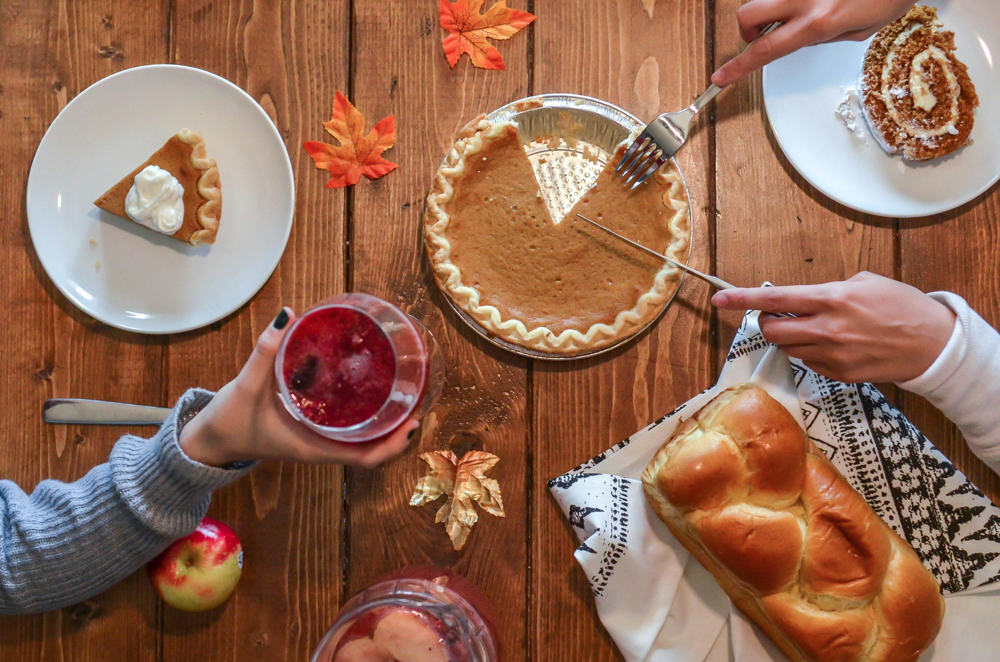

The Best Fall Recipes
. By Gabrielle Siordia
With a brisk fall upon us, it's time to warm up with some fall favorites featuring butternut squash and apples. The sweet and savory aspect of fall recipes makes them my favorite, and I enjoy trying new ones every year.
This butternut squash soup recipe by Love and Lemons is a fall staple featuring butternut squash, garlic, onion, sage, and rosemary. With a total cook time of 45 minutes, this recipe is perfect for someone who wants a quick, easy, and comforting soup they can enjoy with friends and family. This soup is also easy to freeze for a later time.
As someone who is not always a huge fan of pumpkin, apples are my go ingredient for fall desserts. The Old Fashioned Easy Apple Crisp recipe by The Chunky Chef is among one of my favorite desserts that I crave year-round. This recipe uses spiced apples and a crispy oat topping to make the perfect apple crisp that can be enjoyed with vanilla ice cream or whipped cream. My favorite thing about this recipe is how versatile it is. Any variety of apple will do, and they do not have to be peeled in order to achieve a delicious apple crisp.
Favorite Fall Recipes This Week
| Recipe | Total time (mins) | Link |
|---|---|---|
| Butternut Squash Soup | 45 | https://www.loveandlemons.com/butternut-squash-soup/ |
| Old Fashioned Easy Apple Crisp | 60 | https://www.thechunkychef.com/old-fashioned-easy-apple-crisp/ |
| Chicken Gnocchi Soup | 45 | https://www.skinnytaste.com/chicken-gnocchi-soup/ |